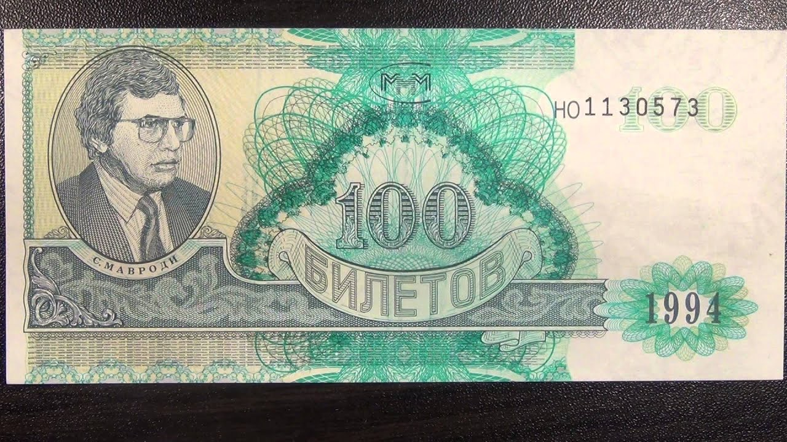

Регистрация в телеграм-боте
Вернуться в раздел "Публицистика Сергея Мавроди"

«Почему? Ведь Америка сама печатает те самые доллары, которые она задолжала другим странам…
Что значит печатает? Эти деньги ведь не берутся из воздуха. ФРС, управляя ликвидностью в мире, выдает доллары в виде кредитов американским банкам (только они зарегистрированы в ФРС), те, в свою очередь, кредитуют другие банки и предприятия, и эти доллары как бы разливаются ровным слоем по всей мировой экономике. Даже российско-белорусские расчеты за нефтяные поставки осуществляются в долларах. По мере возвращения кредитов происходит естественное сжатие этой денежной массы — при условии, что ФРС не продолжает рефинансирование. Но если американский бюджет каждый год занимает больше триллиона долларов (то есть такое количество американской валюты печатается дополнительно), то вместо сжатия происходит инерционное наращивание денежной массы. И это в ближайшие годы может снизить доверие к доллару, к его способности быть мировой резервной валютой и обеспечить необходимым объемом ресурсов потребности мирового рынка. Соответственно, доллар может заметно упасть по отношению к другим валютам. Но это произойдет не сейчас…»

Сергей Мавроди:
Ах, как всё умно! И убедительно. «Сжатие!.. расширение!..» «Денежная масса!..» Читаешь и — проникаешься! Сердце, прям, радуется. Какие у нас министры, блин, компетентные. (Пусть и бывшие. :-))
Вот так вам морочат голову. На протяжении веков. Точнее, всей человеческой истории. По сути. А вы — верите.
А ФРС-то откуда их берёт?! Доллары-то эти? Не из воздуха разве? И откуда она вообще может знать, объясните мне, сколько именно их надо напечатать? «Разлить ровным слоем»? Чтобы правильно «ликвидностью управлять» и выпустить ровно столько денег, сколько в мире за этот срок товаров и услуг новых появилось? (А ведь именно так по идее должно быть. И никак иначе.)
Да ниоткуда! От вольного она печатает. Благо, своя рука владыка. Вот и всё. Вот и все эти с понтом «сжатия-расширения». Все эти «не из воздуха».
Вот дадут Вам завтра право доллары рисовать, и Вы тоже ведь про сжатия-расширения наираспрекраснейшим и наирасчудеснейшим образом всем всё разобъясните. Разве нет? :-)) Только вот в результате всех этих расширений Вы лично станете (почему-то! :-)) как сыр в масле кататься, а все прочие… А им одни только сжатия достанутся. Отчего-то. Ну, получится так! Чисто случайно. Сказку детскую про вершки и корешки помните?.. Вот-вот! :-))
И ответьте мне, г-н Кудрин, на такой ещё вопросец. А то я чего-то не догоняю? (Ну, я же, слава богу, не экономист. Мне простительно. :-))
Вот создала ФРС («не из воздуха» :-)), скажем, триллион долларов. Или сколько там? Ну, не суть. Пусть триллион. Да. И дала этот триллион банкам. А те, в свою очередь, естественно, тут же быстренько раздали его в кредит. То бишь — под проценты. Так? Т.е. вернуть-то им должны уже триллион плюс проценты? Правильно? Но ведь этих процентов нет в природе? Вообще! Денег-то ведь всего только триллион напечатан! Так как же их тогда можно выплатить, эти проценты? А? Никак, что ль, получается?!
Т.е. выбраться из финансовой кабалы тем, кто взял кредит у ФРС (через банки), невозможно в принципе! Они обречены на веки вечные быть отныне её должниками!
Вот что такое мировая финансовая система. И вот почему она должна быть уничтожена. И она будет уничтожена! Мы Можем Многое! Аминь.
Вернуться в раздел "Публицистика Сергея Мавроди"
Регистрация в телеграм-боте